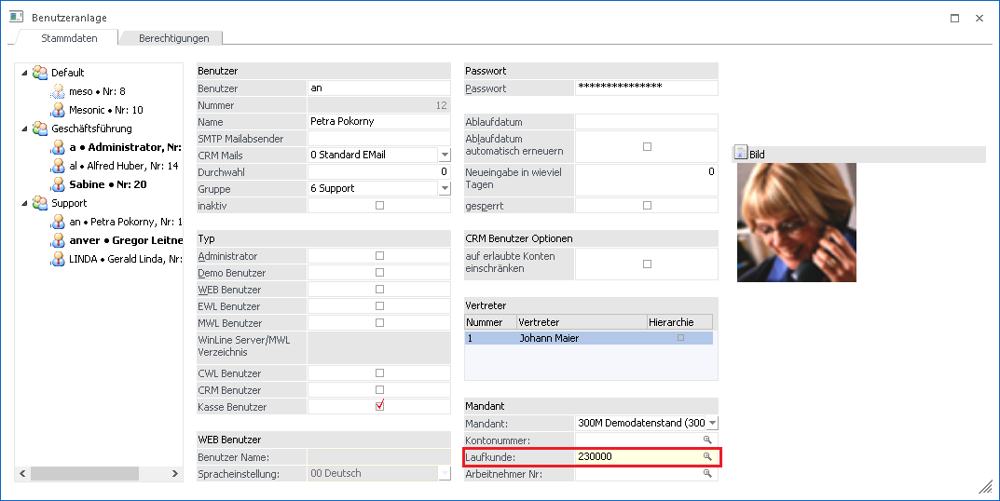
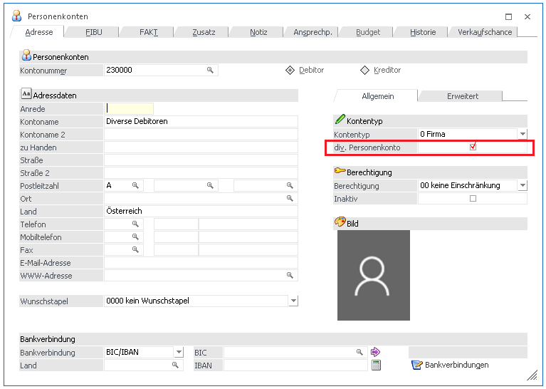
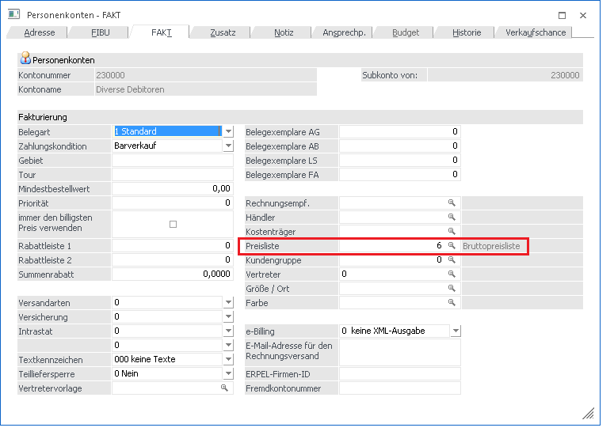

Im WinLine Admin kann im Menüpunkt Benutzer/Benutzeranlage für den jeweiligen Benutzer festgelegt werden, welcher Laufkunde automatisch beim Erfassen von Barrechnungen hinterlegt werden soll. Falls kein Laufkunde eingetragen wird, wird das erste Konto übernommen, welches die Option "div. Personenkonto" im Personenstamm hinterlegt hat.

Hinweis
Der Laufkunde muss zuerst als Personenkonto mit der aktivierten Option "Div. Personenkonto" im CWLStart angelegt werden. Dieser kann entweder als Demobenutzer im Modul FAKT/Stammdaten/Konten/Personenkonten oder mittels Cockpit-Eintrag "Kunden" im Kassencockpit angelegt werden.

Im Register "FAKT" muss eine gültige Preisliste hinterlegt werden, diese wird dann für beim Erfassen über das Kassendashboard herangezogen.
